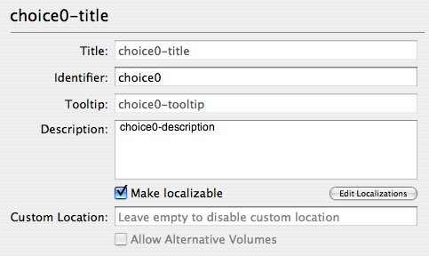
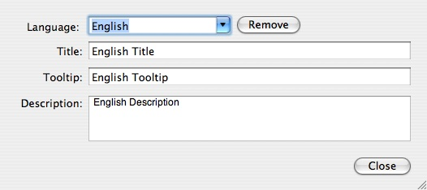
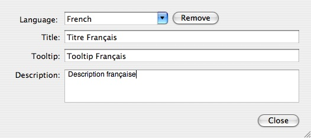

Localizing a Distribution
The resources of a distribution (welcome, read me, license, etc.) can be localized as in packages and metapackages by using .lproj directories within the Contents/Resources directory of the distribution .mpkg. PackageMaker currently does not provide an interface to do this.
In addition to the resources, the choice title, tooltip, and description can be localized. The localized values can be stored in a Localizable.strings file in the .lproj directories or can be specified in the distribution XML. The values can then be referenced by key. PackageMaker does provide an interface for this, which is accessible by editing a choice:
- Select the choice in the “Distribution Details” sidebar.
- Check the “Make localizable” checkbox underneath the description field. You'll notice that PackageMaker replaces the existing title, tooltip, and description with unique keys used to reference the localized values. Screenshot…
- Click the “Edit Localizations” button.
- Select the language you wish to edit. If the language does not exist, type the name of the language and press Return.
- Enter the desired title, tooltip, and description values for the selected language. Screenshot…
- To remove a localization, select it in and press the “Remove” button. PackageMaker requires there to be at least one localization.
- When finished, press the “Close” button.
PackageMaker writes the localization definition into the distribution XML rather than the Localizable.strings files. Example…
 A localizable choice in PackageMaker  English localized values  Le Français localise des valeurs<localization> <strings language="English"> "choice0-title" = "English Title"; "choice0-tooltip" = "English Tooltip"; "choice0-description" = "English Description"; </strings> <strings language="French"> "choice0-title" = "Titre Fran\U00e7ais"; "choice0-tooltip" = "Tooltip Fran\U00e7ais"; "choice0-description" = "Description fran\U00e7aise"; </strings> </localization>Applicable section of distribution XML
"choice0-title" = "English Title"; "choice0-tooltip" = "English Tooltip"; "choice0-description" = "English Description";The corresponding
English.lproj/Localizable.strings